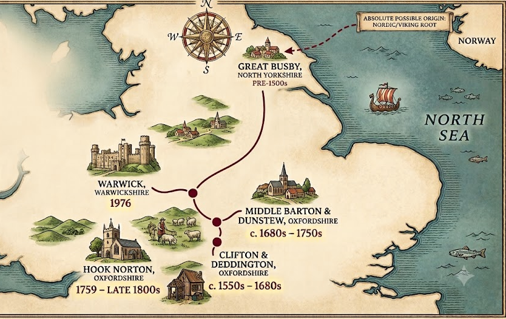
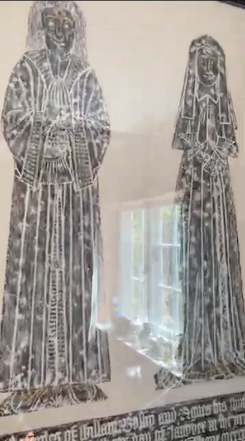
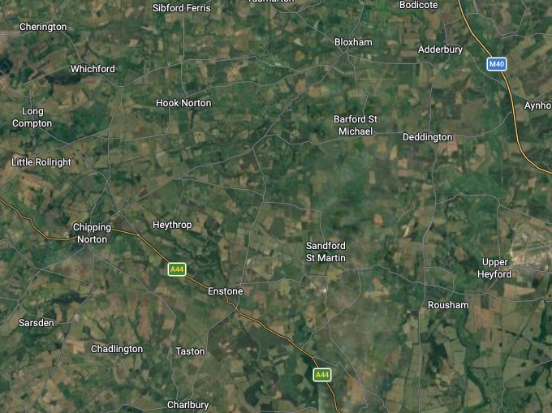
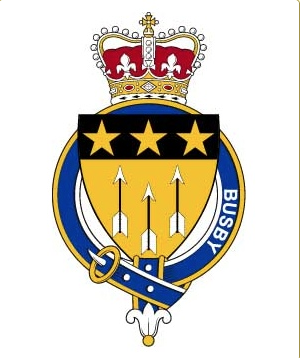

A continuous legacy stretching from the 13th century to the present day. Tracing the path from Nordic origins to the master builders of Oxfordshire.
Direct Ancestral Line
Select a year below to explore the lineage and historical context.
1558: John Busby (Died c. 1558)
The Context: John lived during the turbulent Tudor period, witnessing the reigns of Henry VIII, Edward VI, and Mary I. It was an era defined by the English Reformation and the dissolution of the monasteries, which heavily impacted the rural economies tied to abbey lands.
The Family: John Busby of the hamlet of Clifton was a husbandman (a tenant farmer). His will was proved at Oxford in the year Queen Elizabeth I took the throne, requesting burial in Deddington churchyard.
1598: Simon Busby (Died c. 1598)
The Context: Simon lived through the heart of the Elizabethan Golden Age. England experienced growing agricultural prosperity, the defeat of the Spanish Armada, and a cultural renaissance.
The Family: Operating as a husbandman, Simon demonstrated the family's growing stability and devotion to the church. He left ten shillings to the poor of Clifton and Deddington, and a bushel of barley to the Deddington church.
1609: William Busby (Died c. 1609)
The Context: William's later life coincided with the transition from the Tudors to the Stuarts (King James I). It was a time of relative peace but brewing religious and political tension that would eventually explode into civil war.
The Family: William was a husbandman buried in Deddington churchyard. His widow, Elizabeth, outlived him significantly and her detailed will of 1656 was proved in the Court of Canterbury.
1650: Simon Busby (Died 1650)
The Context: Simon navigated one of the most violent and unstable periods in British history: the English Civil War (1642–1651). Oxfordshire was deeply involved, with nearby Oxford serving as the Royalist capital.
The Family: Despite the war, the family prospered. Simon's wife Anne was recorded in the 1665 Hearth Tax as having three hearths in her Clifton home. This indicates a substantial property of six to eleven rooms and marks the family's successful elevation to the "yeoman" class (landowning farmers).
1644: Robert Busby (Baptized 1644)
The Context: Born in the midst of the Civil War and coming of age during the Restoration of the Monarchy under Charles II, Robert lived through a period of immense social change and the devastating Great Fire of London.
The Family: Robert married Mary Reade of Enstone in 1682. Mary is a pivotal figure in our history, as she is almost certainly the ancestor who purchased the family property in Hook Norton in 1702.
1684: Robert Busby (Baptized 1684)
The Context: Robert lived during the Glorious Revolution (1688) and the Acts of Union (1707) which created the Kingdom of Great Britain.
The Family: Baptized in Deddington church, he marks a geographical transition for the family, eventually moving to Middle Barton and marrying Sarah Spelsbury in 1705. Her ancestors included prominent local rectors.
1721: Benjamin Busby (Baptized 1721)
The Context: The Georgian Era. The landscape of England was changing due to the Enclosure Acts, which fenced off common lands and forced many rural families to move or seek new trades.
The Family: Benjamin is the vital link connecting the modern Hook Norton family back to the Deddington roots. This connection was cemented by a 1765 Settlement Certificate signed by Reverend Edward Stone (the cleric globally famous for discovering the active ingredient in aspirin).
1759: Benjamin Busby (Baptized 1759)
The Context: The dawn of the Industrial Revolution. As populations boomed and towns expanded, there was a massive demand for skilled building trades to construct new homes and infrastructure.
The Family: Benjamin capitalized on this shift. Continuing the family's presence in Laburnum Cottage on Queen Street in Hook Norton, he successfully diversified the family away from pure agriculture and firmly into the building trade.
1796: Benjamin Busby (Baptized 1796)
The Context: The era of the Napoleonic Wars. England was expanding its global empire, while domestically, religious non-conformists were gaining more acceptance.
The Family: Benjamin married Anna Prophett in 1822. Anna's mother's side (the Harrises) were historically documented founder members of the 17th-century Quaker movement in Charlbury, demonstrating the family's expanding social circles.
1825: Henry Busby (Born 1825)
The Context: The Victorian Era. A period of rapid urbanization, technological advancement, and a massive housing boom across the British Isles.
The Family: Henry fully embraced the family trade, becoming a master slater and plasterer. He ran his successful business directly from the family home in Garret Street (now Queen Street), cementing the Busbys as vital craftsmen in Hook Norton.
1855: Henry Busby (Born 1855)
The Context: The late Victorian period saw a rise in social movements, most notably the Temperance movement, which encouraged moderation or abstinence from alcohol to combat social ills.
The Family: Henry was a master slater and deeply musical. Aligning with the social movements of the time, he founded the Hook Norton Temperance Band. The band featured so many family members it became known affectionately as the 'Busby band'.
1976: Dr. John Walter Busby
The Context: The late 20th century, representing the family's transition into modern professional and medical fields.
The Family: A doctor of medicine residing in Warwick, Dr. Busby proudly solidified this specific branch of the family's legacy by successfully petitioning the College of Arms, resulting in an official Grant of Arms in 1976.
Evolution of the Family Trade
A remarkable aspect of the Busby history is observing how the family adapted to the changing English economy over 500 years, moving from working the soil to building the structures upon it.
1500s - 1600s
Husbandmen & Yeomen
Working as tenant farmers (husbandmen) and eventually rising to land-owning yeoman status, cultivating the lands around Clifton and Deddington.
1700s
The Transition
As the Enclosure Acts changed rural farming, the family migrated toward Hook Norton and began diversifying into localized trades.
1800s - 1900s
Master Tradesmen
Operating out of Laburnum Cottage, multiple generations thrived as highly skilled master slaters, plasterers, and carpenters.
Modern Era
Professional & Medical
Transitioning into higher education and the professional class, exemplified by Dr. John Walter Busby in Warwick.
From the North: Our Viking Origins
The story of the Busby family begins long before our arrival in Oxfordshire. Etymologically and historically, the name "Busby" points to direct Nordic and Viking descent. Derived from Old Norse, "busk" refers to a shrub or bush, and the suffix "-by" denotes a farmstead or settlement.
During the era of the Danelaw, Viking settlers established roots in Yorkshire, founding the village of Great Busby. It was from these northern settlements that our ancestors eventually migrated south toward the Cotswolds, drawn by the booming agricultural economies of the abbeys.

The Lions of the Cotswolds & The Wool Trade
Upon migrating to Oxfordshire, the early Busbys found their fortune as sheep farmers and wool merchants working alongside the local monks and abbeys. The key to this wealth was a rare, majestic breed of sheep originally brought to the British Isles by the Romans: the Lions of the Cotswolds.
Renowned for their large size and extraordinary, silky fleeces, these sheep produced some of the highest quality wool in medieval Europe. The Busby ancestors capitalized on this, exporting the raw, silky wool directly to the weaving powerhouses of Florence, Italy. This international trade laid the financial foundation for the family's transition into the yeoman and master tradesmen classes.

Generational Consistencies & Traits
A deep analysis of over 500 years of family records reveals striking consistencies that define the Busby lineage:
Devotion to the Church: A continuous thread of church involvement runs through the centuries. From Simon Busby (1598) leaving barley to the Deddington church, to John Busby endowing church bells and altars, to Henry Busby (1855) founding the Hook Norton Temperance Band. The family regularly sponsored pews, screens, and bell-ringing traditions.
Longevity: In eras plagued by high infant mortality, the Busby adults showed remarkable resilience. Many family members, such as William (died aged 78 in 1785) and Henry (died aged 77 in 1933), lived deep into their 70s and 80s.
The "Busby Eyebrows": A famously strong, dark genetic trait passed down through the generations, so prominent that relatives often joked, "you can tell a Busby by their eyebrows!"

500 Years in Oxfordshire
Our ancestors left an indelible mark on Oxfordshire's landscape:
Clifton & Deddington: The foundational roots from the 1500s through the 17th century.
Enstone & Great Rollright: Home of the Reade and Spelsbury families, who intermarried with the Busbys.
Dunstew & Middle Barton: Transitional homes for the family in the 18th century before firmly planting roots further west.
Hook Norton: The true heartland of the modern family. From 1702 onwards, generations operated as master slaters and musicians here.
An Anglican priest who served as the famously strict Headmaster of Westminster School for over 55 years. Among the many illustrious pupils he shaped was the legendary architect Sir Christopher Wren, the man responsible for rebuilding St Paul's Cathedral and 51 other churches after the Great Fire of London.
A prominent lawyer who worked for the Royalists and the Verney family. He was granted a knighthood and a family crest. While he is not in our direct paternal lineage, his crest was proudly (if unofficially) adopted by many later Busby tradesmen who carved it onto their tombstones across Oxfordshire.

Dr. John Walter Busby & The Official Crest
While the earlier generations "borrowed" the arms of Sir John Busby, Dr. John Walter Busby proudly solidified this specific branch of the family's legacy. He successfully petitioned the College of Arms and was granted a true, official Coat of Arms in 1976.
Original Archival Transcripts
Below are the raw, verbatim transcripts from the primary historical research. (Awaiting final text upload for missing segments).